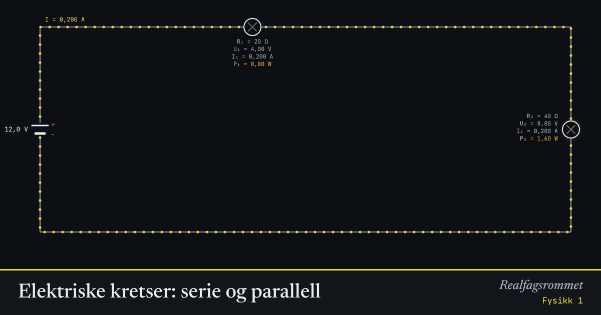

Elektriske kretser: serie og parallell
Prikkene viser strømmen, og lyspærene lyser sterkere jo større effekt de får. Sammenlign hvordan strøm og spenning fordeler seg i serie og parallell.
Start animasjonen
Formler
Om animasjonen
I serie går den samme strømmen gjennom alle komponentene, og spenningen deles mellom dem.
I parallell får hver gren hele spenningen, og strømmen deles. Grenen med minst resistans får mest strøm.
Prikkene viser strømretningen fra pluss til minus. Elektronene i ledningen går egentlig motsatt vei.
Kirchhoffs lover: strømmen inn i et forgreiningspunkt er lik strømmen ut, og spenningene rundt en lukket sløyfe summeres til null.
Prøv dette
- To like lyspærer i serie og i parallell: hvilken kobling lyser sterkest? Forklar med .
- I parallell: hva skjer med strømmen fra batteriet når du gjør mindre?
- Finn erstatningsresistansen for den blandede koblingen med standardverdiene.
- Hvorfor kobles lamper og stikkontakter hjemme i parallell?
Kompetansemål
- Fysikk 1: Ladning, spenning, elektrisk energi og effekt i kretser